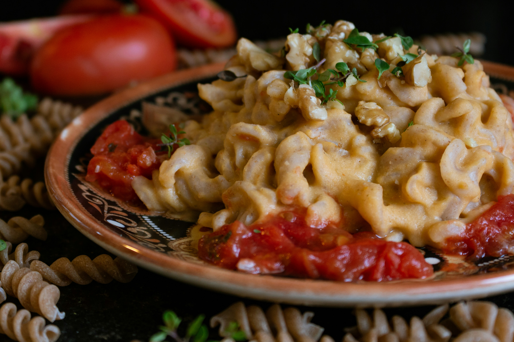
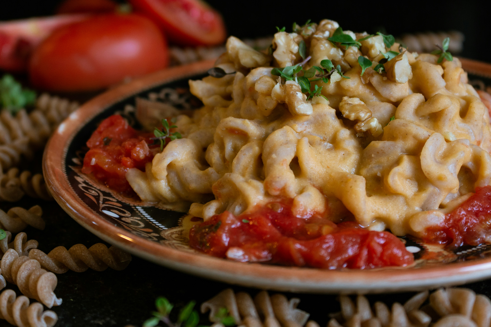

Mac and Cheese
Rich and creamy mac and cheese, an easy, yet delicious treat made from scratch in the comfort of your home!
Ingredients
- 1 box of uncooked macaroni noodles
- Whole Milk
- Cheddar and Parmesan Cheese
- Salt
- Pepper
- Paprika
- Bread Crumbs
Steps
- Boil the noodles, drain, and transfer to a prepared baking dish.
- Make the cheese sauce, pour the sauce over the noodles, and stir.
- Make the topping, spread it over macaroni and cheese, and sprinkle with paprika.
- Bake the mac and cheese until the topping is golden brown.